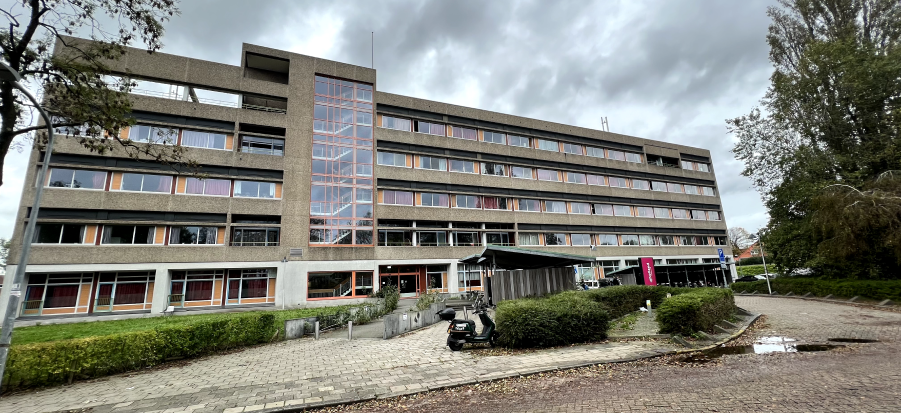
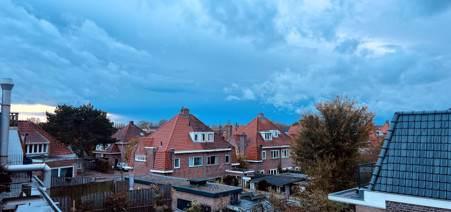
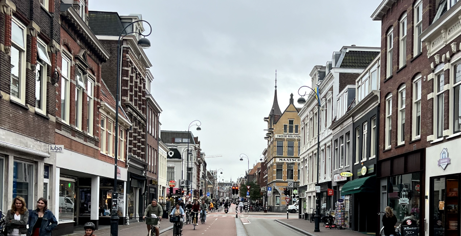

If you’re planning on studying or working in Haarlem, the Netherlands, you’ll probably need a place to live. It’s a tough task when you’re on a time limit, but we got you covered. Here are some resources and information to make your search as smooth as possible.
Student Accommodations:
Duwo student Students acccomodation
Students will have an easier time on room.nl. They specialize in helping students find rooms across the Netherlands. Here’s what you need to know:
- Waiting Lists: Almost always, you're going to be waiting for someone to move out. This is especially true in cities like Haarlem and Amsterdam. Increase your chances of getting a room by registering early.
- Response System: Just like Uber does with drivers, room.nl does with rooms. Whenever there’s one available, express your interest right away. Rooms go quick.
Popular Dutch housing websites:
If traditional student dormitories aren’t your thing, then maybe these options will be. Shared apartments, studios, and houses can all be found on websites such as your University webpage, Housing Anywhere, and StudentenWoningWeb. If you’re in a rush to find a home, look no further than these popular Dutch housing websites:
Social Media and Facebook Groups:
Another useful way is through Social media. There are Facebook groups dedicated to finding homes. In these groups, you’ll often find members who post available apartments or rooms. However, be cautious when doing this as there are scams everywhere.
Never send money without seeing the property or meeting the landlord face-to-face. Always request a formal lease agreement Research the person’s background offering you accommodations Stick to trusted platforms for transactions and communication
Finding accommodations anywhere could be challenging. Especially in Haarlem and the Netherlands as a whole. But with the right resources and a cautious approach, landlords will have trouble evicting you once your lease is up (kidding). Good luck!